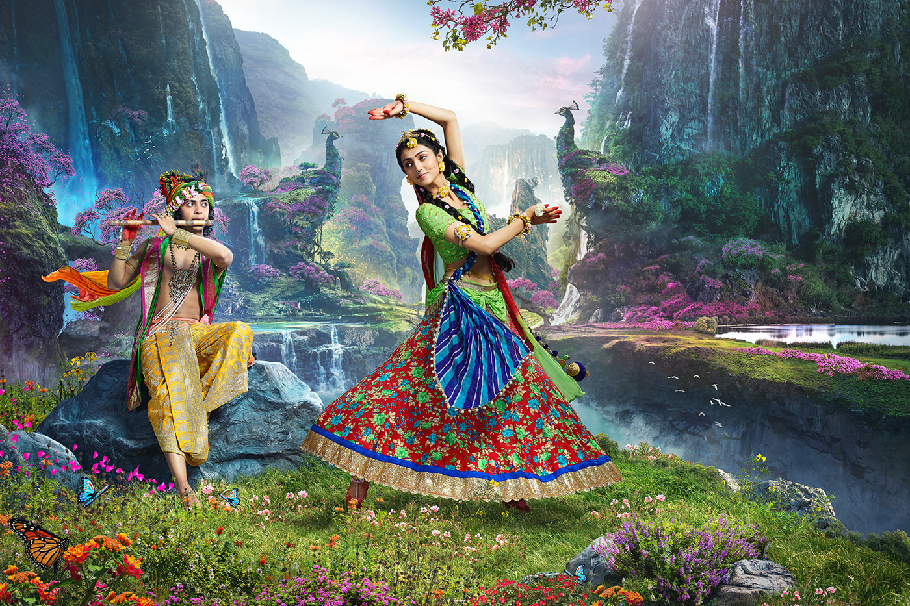
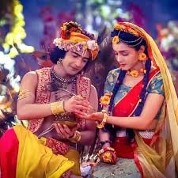
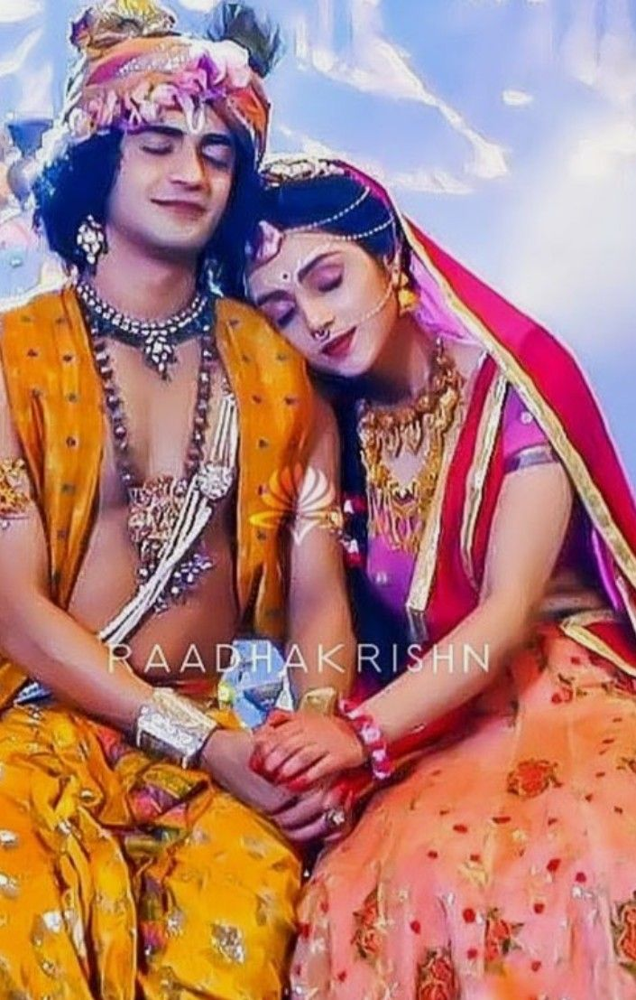
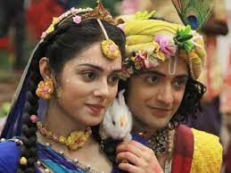
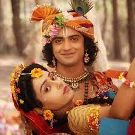
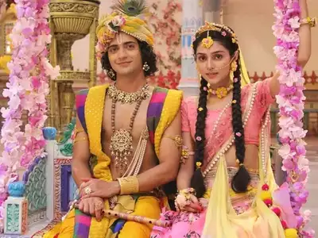

radhakrishna

introduction
Krishna's devotee, Sridama curses Radha in Goloka to forget Krishna for 100 years and live in Bhuloka.
This was a part of cosmic play as it was time for Krishna to make his entry into the mortal world.
Radha and Krishna are reborn in Barsana and Mathura respectively.
Krishna is destined to kill Kamsa. Meanwhile, Ayan, Radha's friend loves Radha and he tries to separate Radha from Krishna.
Krishna defeats Vyomasura, a demon whose marriage was fixed with Radha.
Krishna takes Radha out of all humanly weaknesses like
bhaya (fear), moha (greed), krodha (anger), ghrina (hatred), irshya (envy), ahankara (pride) and heenbhavna (lack of self-confidence), after defeating each human weakness Radha comes closer to Krishna.
She was forced to marry Ayan.Later she realises that this marriage merely is an illusion as she can't marry anyone except Krishna because she is the incarnation of Lakshmi.
Radha understands that her marriage is fake and eternally, she is Krishna's consort after Brahma completes Brahma Kalyāna (heavenly wedding) of Radha and Krishna in Goloka.
Krishna, along with Balarama defeats the demons sent by Kamsa such as Putana, Bakasura, Aghasura, Timirasura,
Sudarshana, Arishtasura, Keshi, Vyomasura, Dhenukasura, Ekadansha, Pralambasura, the evil enchanter Sammohana, and his 8 brothers who are defeated by Radha's Ashtalakshmi (8 incarnations of Lakshmi) avatars.
Finally, Kans calls Krishna and Balaram to Mathura for killing them, but all in vain.
Balaram kills Kamsa's eight brothers and Krishna kills Kamsa.
Krishna's biological parents Devaki and Vasudeva are freed from prison and Kamsa's imprisoned father Ugrasena is crowned king.
Now, Krishna, Balarama and the Yadavas move to Dwaraka, their new home.
Balarama marries Revati (Jyotishmati) in her earlier life, who loved Balarama as Shesha. Elsewhere, Krishna marries Rukmini.
Later, Krishna also marries Satyabhama and Jambavati. He then kills the evil Narakasura and his general Mura.
galarry




